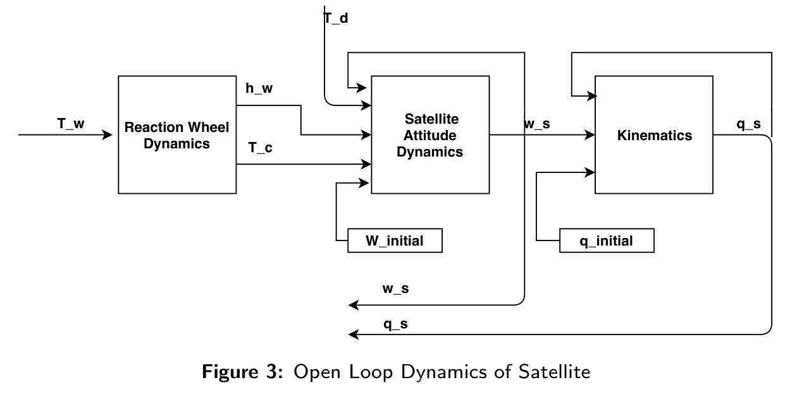
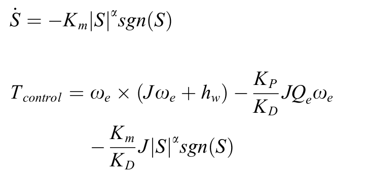
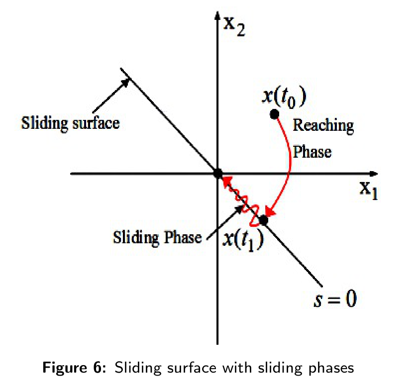
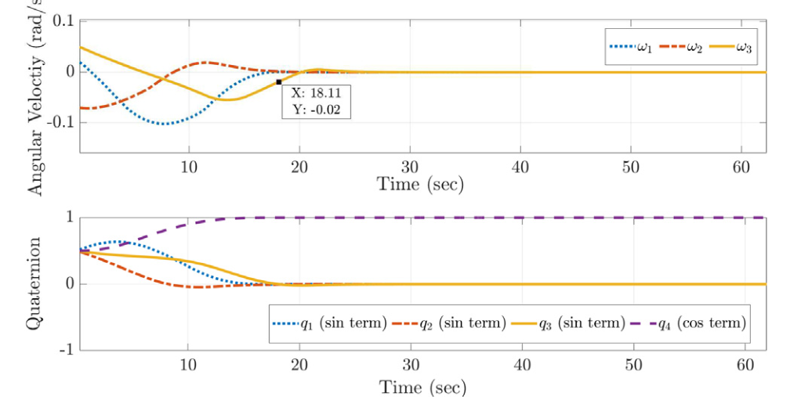
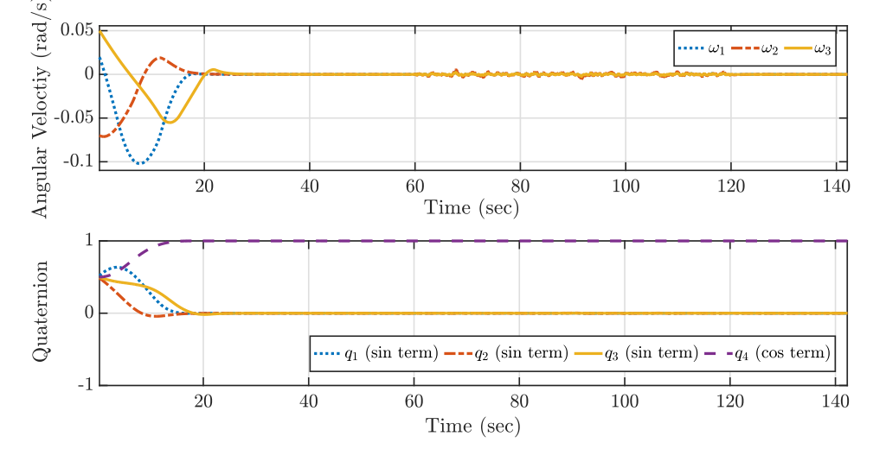
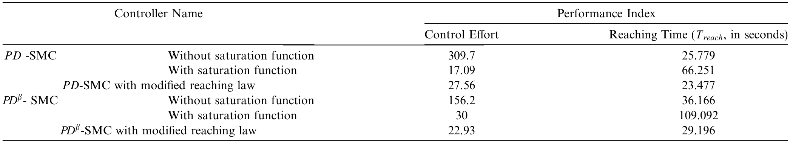

Advanced Control Algorithms for Satellite Attitude Maneuver
B.Tech Final-Year Thesis · Indian Institute of Space Science and Technology (IIST) · 2019
Advisor: Dr. N. Selvaganesan
Overview
The undergraduate thesis studied advanced control algorithms for three-axis satellite attitude maneuvering using reaction wheels. The work developed a nonlinear quaternion-based spacecraft model, included reaction-wheel actuator dynamics, and compared integer-order and fractional-order control strategies for attitude stabilization.
The main focus was on PD and fractional-order PDβ sliding-mode controllers, together with modified reaching laws designed to reduce chattering while preserving disturbance rejection and robustness.
Reaction-Wheel Satellite Attitude Dynamics
Satellite attitude is represented using quaternions, with nonlinear rotational dynamics derived from angular momentum. Three reaction wheels provide control torque, and their actuator dynamics are included explicitly. Attitude and angular-velocity errors provide the feedback signals used by the controllers.

Sliding-Mode and Fractional-Order Control
Four nonlinear controller variants were evaluated: PD sliding-mode control (PD-SMC), fractional-order PDβ-SMC, and modified-reaching-law versions of both controllers. The modified reaching law was introduced to reduce the chattering associated with conventional switching-based sliding-mode control while retaining fast convergence and robustness.
The power-rate reaching law makes the corrective action depend on distance from the sliding surface: it drives the state strongly when the error is large, then softens the switching action near the surface. Substituting that law into the reaction-wheel spacecraft dynamics produces a control torque with model-compensation and nonlinear reaching terms.

Stability and Controller Tuning
Controller gains and fractional-order parameters were tuned through an optimization procedure balancing attitude and angular-velocity tracking, transient performance, and control effort.
- Finite-time convergence toward the sliding surface
- Lyapunov-based stability analysis
- Reaching-time analysis
- Optimization-based controller parameter tuning
After the trajectory reaches the sliding surface, the angular-velocity error becomes tied to the attitude error. A quadratic Lyapunov argument then shows that the attitude-error energy decreases for positive controller gains, establishing asymptotic convergence. The reaching-law analysis separately guarantees arrival at the surface in finite time.

Simulation Results
The proposed modified-reaching-law controllers achieved attitude stabilization while eliminating the strong control chattering visible in conventional sliding-mode implementations. Disturbance rejection was tested by injecting external disturbance torque, and robustness was evaluated under spacecraft inertia perturbations.
Modified PD-SMC reduced settling and reaching time relative to conventional PD-SMC. The fractional-order controller provided another trade-off between reaching time and control effort. All results shown here are simulation-based.



Main Findings
Modified reaching laws reduced sliding-mode chattering while maintaining fast attitude convergence and robustness to the tested disturbances and model-parameter variation.
- Nonlinear quaternion spacecraft model with reaction-wheel dynamics
- Integer- and fractional-order sliding-mode controllers
- Modified reaching laws for chattering reduction
- Finite-time convergence and Lyapunov-stability analysis
- Disturbance rejection and robustness to inertia uncertainty
- Optimization-based gain tuning
Limitations and Future Work
The study was simulation-based and used simplified disturbance and uncertainty models. It did not model several environmental effects that matter in flight, including solar-radiation pressure, gravity variations caused by Earth’s non-spherical shape, and disturbances from Earth’s magnetic field.
The paper identifies three natural extensions: develop a fractional-order controller that jointly minimizes energy use and reaching time, introduce adaptive control to strengthen robustness to parameter uncertainty, and validate the controllers with physics-based environmental models driven by representative real-time data.
From Undergraduate Thesis to Publication
This B.Tech thesis later led to a journal publication in Advances in Space Research.
Debajyoti Chakrabarti and N. Selvaganesan, “PD and PDβ Based Sliding Mode Control Algorithms with Modified Reaching Law for Satellite Attitude Maneuver,” Advances in Space Research, 65, 1279–1295, 2020.